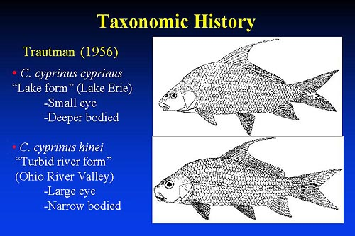

Trautman conducted a study on the variation within Ohio Carpiodes cyprinus. He concluded that there were two cyprinus forms inhabiting the Ohio River Valley and that the differences in body form could be attributed to differences in water quality.
"Lake form" (Lake Erie) in which food base is more abundant.
Individuals have smaller eyes and are much more deep bodied
"Turbid river form" (Ohio River Valley)
Individuals from turbid waters containing little food grow slowly, are narrow bodied and have a large eyes.